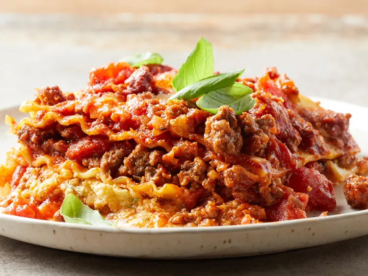

American Lasagna
Description
Making this lasagna recipe a day ahead and refrigerating overnight allows the spices to meld and gives it exceptional flavor.
Ingredients
- ½ pounds lean ground beef
- onion, chopped
- cloves garlic, minced
- (29 ounce) can diced tomatoes
- (6 ounce) cans tomato paste
- Spices and seasonings
- 2 tablespoons brown sugar
- 1 tablespoon chopped fresh basil
- 2 ½ teaspoons salt, divided
- 1 teaspoon dried oregano
- 12 dry lasagna noodles
- 1 pint part-skim ricotta cheese
- ½ cup grated Parmesan cheese
- 2 large eggs, beaten
- 2 tablespoons dried parsley
- 1 pound mozzarella cheese, shredded
- 2 tablespoons grated Parmesan cheese
Steps
- Gather all ingredients.
- Cook and stir ground beef, onion, and garlic in a large skillet over medium heat for 5 minutes; drain fat.
- Mix in diced tomatoes, tomato paste, brown sugar, basil, 1 1/2 teaspoons salt, and oregano.
- Preheat the oven to 375 degrees F (190 degrees C).
- Meanwhile, bring a large pot of lightly salted water to a boil. Cook lasagna noodles in boiling water
- Mix together ricotta, 1/2 cup Parmesan cheese, eggs, parsley, and remaining 1 teaspoon salt in a medium bowl.
- Layer 1/3 of the noodles in the bottom of a 9x13-inch baking dish. Cover with 1/2 of the ricotta mixture.
- Cover the ricotta mixture with 1/2 of the mozzarella cheese, and 1/3 of the meat sauce.
- Repeat. Top with remaining noodles and meat sauce. Sprinkle 2 tablespoons Parmesan cheese over the top.
- Bake in the preheated oven for 30 minutes. Let stand for 10 minutes before serving.
- Enjoy!